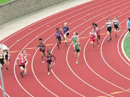

Baseball
I have played basebal for many years, since I was about 4, and I still enjoy it. I usually like to play with my friends and have played in multiple leagues. I'm not currently playing at Lane because I'm doing track, but maybe in the future I'll try.

Running
I started cross country in 6th grade because I thought it would be fun and I still do it. I ran cross country and track in 7th and 8th grade and plan to all throughout high school. At Lane, practice is 5 days a week and very challenging, but I enjoy it.
Chess
I learned chess when I was about 6 or 7, but I didn't really start playing until 3 years ago. I like to play online a lot and with my friends at school, and go to competitive tournaments regularly.

To contact me, email blink@cps.edu